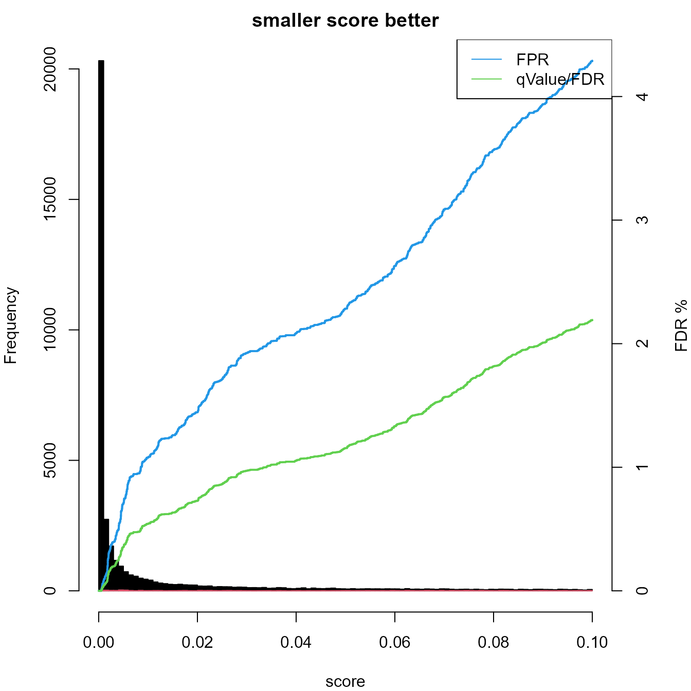
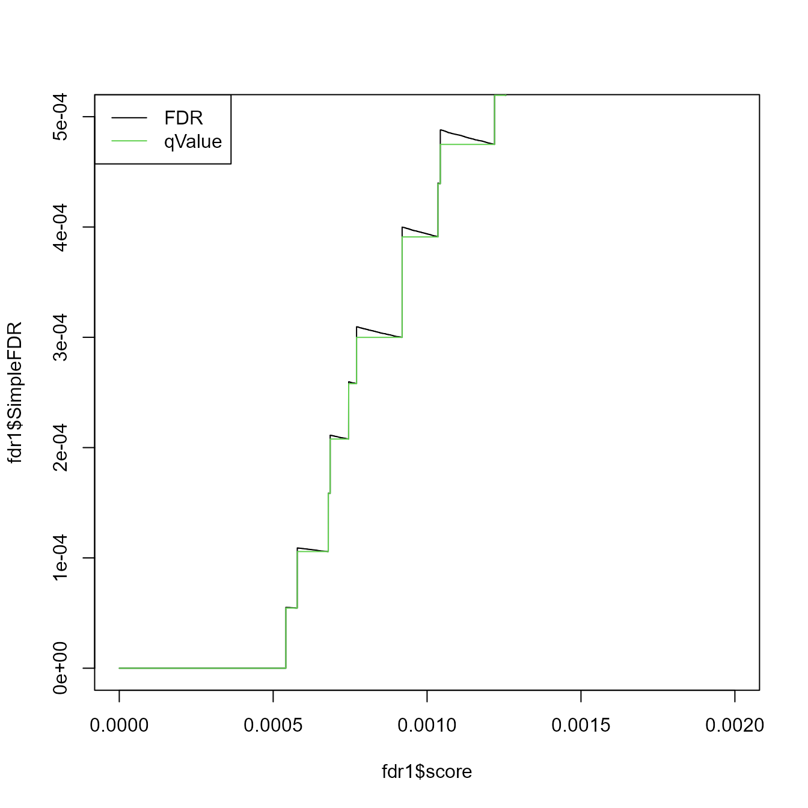

../vignettes/TargetDecoyFDR_Example.Rmd
TargetDecoyFDR_Example.RmdHere we describe how you can estimate the false discovery rate (FDR) when matching your spectra against a FASTA sequence database using spectra search engines such as Mascot or Comet. The sequence database contains forward sequences and the same number of reverse sequences.
The data needs to have two columns, one with a label, to distinguish targets and decoys, the other with a score. Then you also need to know if a larger score or a smaller score is better. In our example data, we have two scores: score and score2. While the score is better if it smaller (e.g, posterior erro probability), score2 is better if it is larger.
Black line - Score distribution of decoy hits. Green line - Score distribution of vorward hits. TN - true netagive, FN - false negative, FP - false postitive, TP - true positive
rm(list = ls())
library(dplyr)
library(prozor)
data(fdrSample)
x <- dplyr::arrange(fdrSample, score2)
knitr::kable(head(fdrSample))| proteinID | score | score2 | |
|---|---|---|---|
| 28064 | sp|P00738|HPT_HUMAN | 0.0030141 | 2.520847 |
| 47194 | sp|P19823|ITIH2_HUMAN | 0.0008878 | 3.051662 |
| 8916 | sp|Q86WI1|PKHL1_HUMAN | 0.0350109 | 1.455797 |
| 37157 | sp|P04003|C4BPA_HUMAN | 0.0018141 | 2.741330 |
| 60963 | sp|P01876|IGHA1_HUMAN | 0.0000013 | 5.897889 |
| 89689 | sp|P01042|KNG1_HUMAN | 0.0000000 | 12.305967 |
What is also required is that the number of Targets and Decoys are the same. This is given for mass spectrometry database searches. Our dataset here is already truncated at a 5% FDR. Therefore the number of decoys is much smaller.
##
## FALSE TRUE
## 39142 858In our example, we will use the package to filter the data further for a 1% FDR.
Computing the FDR can be done by calling the function computeFDR. plotFDR than shows the score distribution for the targets (black) and decoys (red) as well as the FDR for the two scores implemented (x axis).
fdr1 <- computeFDR(fdrSample$score, grepl("REV_",fdrSample$proteinID),larger_better = FALSE)
plotFDR(fdr1)
legend("topright", legend = c("FPR", "qValue/FDR"), lty = c(1,1), col = c(4,3))
The output is a named list which can be easily converted into a data frame. We next will briefly discuss the elements of the output.
knitr::kable(head(data.frame(fdr1)))| larger_better | order | decoy_hit | score | FPR | SimpleFDR | qValue_FPR | qValue_SimpleFDR |
|---|---|---|---|---|---|---|---|
| FALSE | 287 | FALSE | 0 | 0 | 0 | 0 | 0 |
| FALSE | 3581 | FALSE | 0 | 0 | 0 | 0 | 0 |
| FALSE | 29584 | FALSE | 0 | 0 | 0 | 0 | 0 |
| FALSE | 26559 | FALSE | 0 | 0 | 0 | 0 | 0 |
| FALSE | 15524 | FALSE | 0 | 0 | 0 | 0 | 0 |
| FALSE | 30840 | FALSE | 0 | 0 | 0 | 0 | 0 |
We define
* false postivies (FP) as the number of passing decoy assignments
* true positives (TP) as the number of passing forward hits.Which is the “Fraction of incorrect assignments above score threshold”. The multiplier 2 is needed here since we assume that also the forward sequences have false assignments.
\[ FPR = \frac{2 \cdot FP}{TP + FP} \]
This is taken from the reference by (Elias and Gygi 2007). (Storey and Tibshirani 2003) defines FPR differently. Kaell points out that the FPR here actually should be named FDR and that “Many proteomics papers incorrectly refer to this quantity as the false positive rate.”
“The FDR associated with a particular score threshold is defined as the expected percentage of accepted PSMs that are incorrect, where an accepted PSM is one that scores above the threshold (Many proteomics papers incorrectly refer to this quantity as the false positive rate).” ((Käll et al. 2007))
The Simple FDR intrudced by ((Käll et al. 2007)) is defined by :
\[ SimpleFDR = \frac{FP}{TP} \]
“For a given score threshold, we count the number of decoy PSMs above the threshold and the number of target PSMs above the threshold. We can now estimate the FDR by simply computing the ratio of these two values (SimpleFDR).”(Käll et al. 2007)
plot(fdr1$score, fdr1$SimpleFDR, type = "l", xlim = c(0,0.002), ylim = c(0,0.0005))
lines(fdr1$score, fdr1$qValue_SimpleFDR, col = 3, type = "l", xlim = c(0,0.002), ylim = c(-0.002,0))
legend("topleft", legend = c("FDR", "qValue"), lty = c(1,1), col = c(1,3))
Although the score is getting better (smaller) the FDR may increase since the number of TP in the denominator decreases while the number of FP stays the same. Therefore Storey and Tibshirani proposed the q-value, “which in our case is defined as the minimal FDR threshold at which a given PSM is accepted”(Käll et al. 2007).
Most frequently you will need to get the score for an FDR in order to filter your data. To report your data with an FDR of 1% instead of 5% you can execute this code:
(score01G <- predictScoreFDR(fdr1,qValue = 5,method = "FPR"))## [1] 0.09991592## [1] 39999 3
(score01G <- predictScoreFDR(fdr1,qValue = 1,method = "FPR"))## [1] 0.008509834## [1] 29179 3
(score01K <- predictScoreFDR(fdr1,qValue = 1,method = "SimpleFDR"))## [1] 0.03394749## [1] 34875 3Since the scores are sorted to compute the FDR, we return also the order column. This column can be used to align the ID’s with the scores.
knitr::kable(head(data.frame(ID = fdrSample$proteinID[fdr1$order], fdr1)))| ID | larger_better | order | decoy_hit | score | FPR | SimpleFDR | qValue_FPR | qValue_SimpleFDR |
|---|---|---|---|---|---|---|---|---|
| sp|P04264|K2C1_HUMAN | FALSE | 287 | FALSE | 0 | 0 | 0 | 0 | 0 |
| sp|P04264|K2C1_HUMAN | FALSE | 3581 | FALSE | 0 | 0 | 0 | 0 | 0 |
| sp|P35527|K1C9_HUMAN | FALSE | 29584 | FALSE | 0 | 0 | 0 | 0 | 0 |
| sp|P04264|K2C1_HUMAN | FALSE | 26559 | FALSE | 0 | 0 | 0 | 0 | 0 |
| sp|P02768|ALBU_HUMAN | FALSE | 15524 | FALSE | 0 | 0 | 0 | 0 | 0 |
| sp|P04264|K2C1_HUMAN | FALSE | 30840 | FALSE | 0 | 0 | 0 | 0 | 0 |
For convenience we provide the function computeFDRwithID which integrates the reordering of the ID’s.
fdr1 <- computeFDRwithID(fdrSample$score,fdrSample$proteinID, decoy = "REV_",larger_better = FALSE)
knitr::kable(head(data.frame(fdr1)))| larger_better | order | decoy_hit | score | FPR | SimpleFDR | qValue_FPR | qValue_SimpleFDR | ID |
|---|---|---|---|---|---|---|---|---|
| FALSE | 287 | FALSE | 0 | 0 | 0 | 0 | 0 | sp|P04264|K2C1_HUMAN |
| FALSE | 3581 | FALSE | 0 | 0 | 0 | 0 | 0 | sp|P04264|K2C1_HUMAN |
| FALSE | 29584 | FALSE | 0 | 0 | 0 | 0 | 0 | sp|P35527|K1C9_HUMAN |
| FALSE | 26559 | FALSE | 0 | 0 | 0 | 0 | 0 | sp|P04264|K2C1_HUMAN |
| FALSE | 15524 | FALSE | 0 | 0 | 0 | 0 | 0 | sp|P02768|ALBU_HUMAN |
| FALSE | 30840 | FALSE | 0 | 0 | 0 | 0 | 0 | sp|P04264|K2C1_HUMAN |
## R version 4.1.1 (2021-08-10)
## Platform: x86_64-w64-mingw32/x64 (64-bit)
## Running under: Windows 10 x64 (build 19044)
##
## Matrix products: default
##
## locale:
## [1] LC_COLLATE=English_United States.1252
## [2] LC_CTYPE=English_United States.1252
## [3] LC_MONETARY=English_United States.1252
## [4] LC_NUMERIC=C
## [5] LC_TIME=English_United States.1252
##
## attached base packages:
## [1] stats graphics grDevices utils datasets methods base
##
## other attached packages:
## [1] prozor_0.3.1 dplyr_1.0.7
##
## loaded via a namespace (and not attached):
## [1] Rcpp_1.0.7 bslib_0.3.1 compiler_4.1.1
## [4] pillar_1.6.4 jquerylib_0.1.4 highr_0.9
## [7] tools_4.1.1 docopt_0.7.1 digest_0.6.28
## [10] lattice_0.20-44 AhoCorasickTrie_0.1.2 jsonlite_1.7.2
## [13] evaluate_0.14 memoise_2.0.0 lifecycle_1.0.1
## [16] tibble_3.1.4 pkgconfig_2.0.3 rlang_0.4.11
## [19] Matrix_1.3-4 DBI_1.1.1 yaml_2.2.1
## [22] pkgdown_1.6.1 xfun_0.26 fastmap_1.1.0
## [25] stringr_1.4.0 knitr_1.36 hms_1.1.1
## [28] desc_1.4.0 generics_0.1.1 fs_1.5.0
## [31] sass_0.4.0 vctrs_0.3.8 systemfonts_1.0.3
## [34] ade4_1.7-18 grid_4.1.1 rprojroot_2.0.2
## [37] tidyselect_1.1.1 glue_1.4.2 R6_2.5.1
## [40] textshaping_0.3.6 fansi_0.5.0 rmarkdown_2.11
## [43] tzdb_0.1.2 readr_2.0.1 seqinr_4.2-8
## [46] purrr_0.3.4 magrittr_2.0.1 MASS_7.3-54
## [49] htmltools_0.5.2 ellipsis_0.3.2 assertthat_0.2.1
## [52] ragg_1.2.0 utf8_1.2.2 stringi_1.7.4
## [55] cachem_1.0.6 crayon_1.4.2Elias, Joshua E, and Steven P Gygi. 2007. “Target-Decoy Search Strategy for Increased Confidence in Large-Scale Protein Identifications by Mass Spectrometry.” Nature Methods 4 (3): 207–14.
Käll, Lukas, John D Storey, Michael J MacCoss, and William Stafford Noble. 2007. “Assigning Significance to Peptides Identified by Tandem Mass Spectrometry Using Decoy Databases.” Journal of Proteome Research 7 (01): 29–34.
Storey, John D, and Robert Tibshirani. 2003. “Statistical Significance for Genomewide Studies.” Proceedings of the National Academy of Sciences 100 (16): 9440–5.